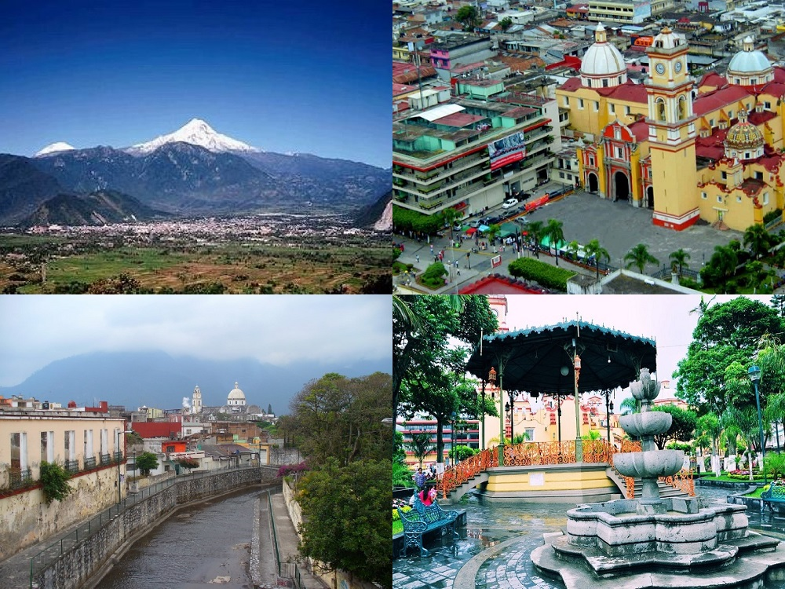

¡Descubre la Joya de Veracruz: Orizaba!
Orizaba es una ciudad llena de historia, naturaleza y cultura. Con su imponente Pico de Orizaba y su hermoso Centro Histórico, este destino te sorprenderá desde el primer momento.

¿Por qué visitar Orizaba?
- Recorre el Paseo del Río, un camino escénico con puentes colgantes y áreas naturales.
- Explora el Palacio de Hierro, diseñado por Gustave Eiffel.
- Sube al Cerro del Borrego en teleférico y disfruta de la mejor vista de la ciudad.
- Disfruta de la gastronomía local con platillos como chiles en nogada y tamales de comino.
Vive una experiencia inolvidable
Ya sea que busques aventura, cultura o relajación, Orizaba lo tiene todo. Visita sus museos, parques y miradores, y enamórate de su encanto.
¡Planea tu viaje ahora!
Consulta nuestra Guía Turística y empieza a planear tu próxima escapada.